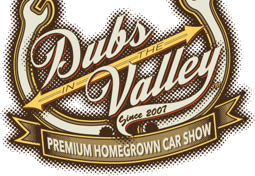

<!doctype html>
<html class="no-js" lang="en">
  <head>
    <meta charset="utf-8" />
    <meta name="viewport" content="width=device-width, initial-scale=1.0" />

<title>Dubs In The Valley</title>
<link rel="icon" 
      type="image/png" 
      href="images/DIVicon.png" />
      
	<meta name="description" content="Dubs In The Valley is a home grown, grassroots, midwest based german car show located in Oshkosh, WI.." />
	
	<link rel="stylesheet" href="css/reset">
	<link rel="stylesheet" href="css/foundation.css" />
	<link rel="stylesheet" href="css/2014DIVstyles.css">
	<script src="js/vendor/modernizr.js"></script>
	    
	<link href='http://fonts.googleapis.com/css?family=Sanchez:400italic,400&subset=latin,latin-ext' rel='stylesheet' type='text/css'><!-- google font kit -->

</head>

<body>

	<div class="header"><!-- keeping header and footer outside of the "flex-container" allows the background images to tile to 100% of the screen width -->
		<div class="content"> <!-- constrains the content to 1024px wide and centered on the screen -->
		
			<div class="half">
				<a href="index.html"></a>
			</div>
			
			<div class="half">
				<h1 class="pull-text flushright white">The best little car show you’ve never heard of.</h1>
			</div>
			
		</div><!-- close header content div -->
	</div> <!-- close header -->


<div class="block"><!-- keeping this outside of the "flex-container" allows the background color to expand to 100% of the screen width -->

	<div class="flex-container"> <!-- will keep main site content confined to max width of 1024  -->

		<div class="secondary">
			<h1>A word from the man behind the curtain:</h1>
			<p>As we head into year 8 for DIV we are making plans to continue with our tradition of just kicking ass. With space, entry and some other small concerns addressed for this year, we’re ready to rock. Make sure to get yourself to Oshkosh, WI on 7/19/14 and join us as we celebrate the scene we know and love. <a href="#"> read more…</a></p>
		</div>

		<div class="content"><!-- open content div to hold featured projects images -->			
				<div class="half">
					<div class="icon"></div>
					<h5 class="centered-text">Show Info</h5>
					<p class="caption">Dreamcatcher cray you probably haven't heard of them Intelligentsia, disrupt aesthetic slow-carb drinking vinegar bicycle rights 3 wolf moon selfies leggings. <a href="#">read more…</a></p>
				</div>

				<div class="half">
					<div class="icon"></div>
					<h5 class="centered-text">Registration</h5>
					<p class="caption">Dreamcatcher cray you probably haven't heard of them Intelligentsia, disrupt aesthetic slow-carb drinking vinegar bicycle rights 3 wolf moon selfies leggings. <a href="#">read more…</a></p>
				</div>

		</div> <!-- close featured projects content div -->

	</div><!-- close flex-container -->
		
</div><!-- close block -->

<!-- open footer -->

<div class="footer-top"><!-- open footer -->
	<div class="row">
	    <div class="large-12 columns">
	          <ul class="inline-list">
	            <li><a href="#"></a></li>
	            <li><a href="#"></a></li>
	            <li><a href="#"></a></li>
	          </ul>
	    </div>
	</div>
	
	<div class="row">
	    <div class="large-12 columns">	
	         <ul class="inline-list">
	           <li><a href="#"></a></li>
	           <li><a href="#"></a></li>
	         </ul>
	    </div> 
	</div> 
</div><!-- close footer-top-->

<div class="footer-bottom">      
	<div class="row">
        <div class="large-12">
			<p class="caption">&copy; 2010 Dubs in the Valley&trade;. All rights reserved. Dubs in the Valley &amp; the Dubs in the Valley logo are trademarks of Madspeed.org. This website is not affiliated with or endorsed by Volkswagen AG or Volkswagen of America, Inc. All Volkswagen trademarks herein are used under license from VWC. Site design and development by <a href="http://www.diversedesign.com" target="_blank">www.diversedesign.com</a>.</p>
		</div>
	</div>	
</div><!-- close footer-bottom -->
	
	
    <script src="js/vendor/jquery.js"></script>
    <script src="js/foundation.min.js"></script>
    <script>
      $(document).foundation();
    </script>

    <script>
      $(document).foundation();
    </script>
    <script>
    $('.right-off-canvas-menu a').click(function(e){
    $('.off-canvas-wrap').removeClass('move-left');
})
    </script> 
    

</body>
</html>